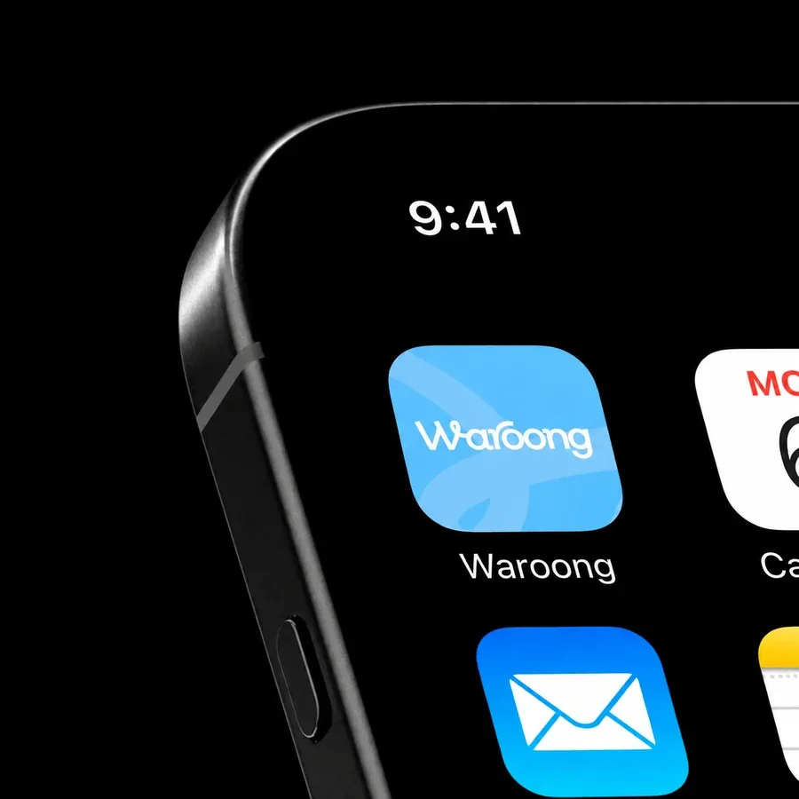
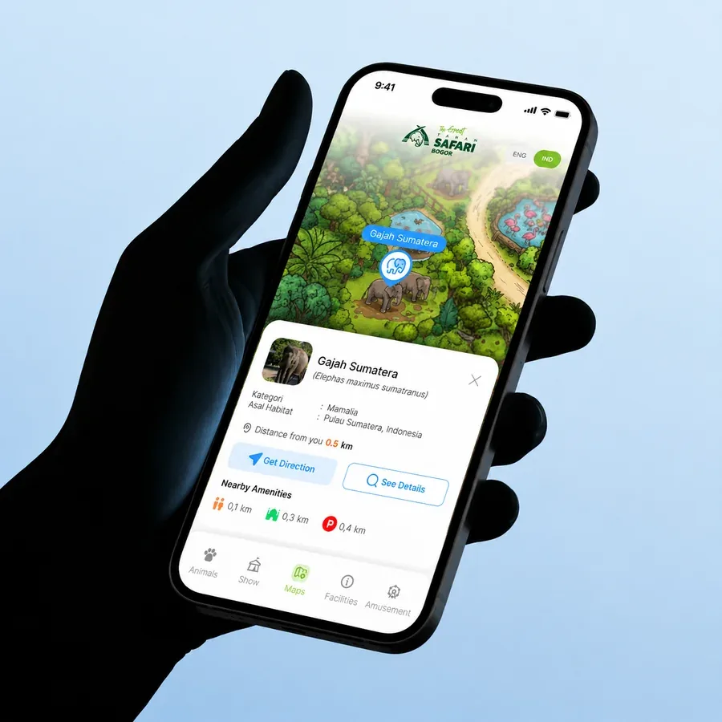
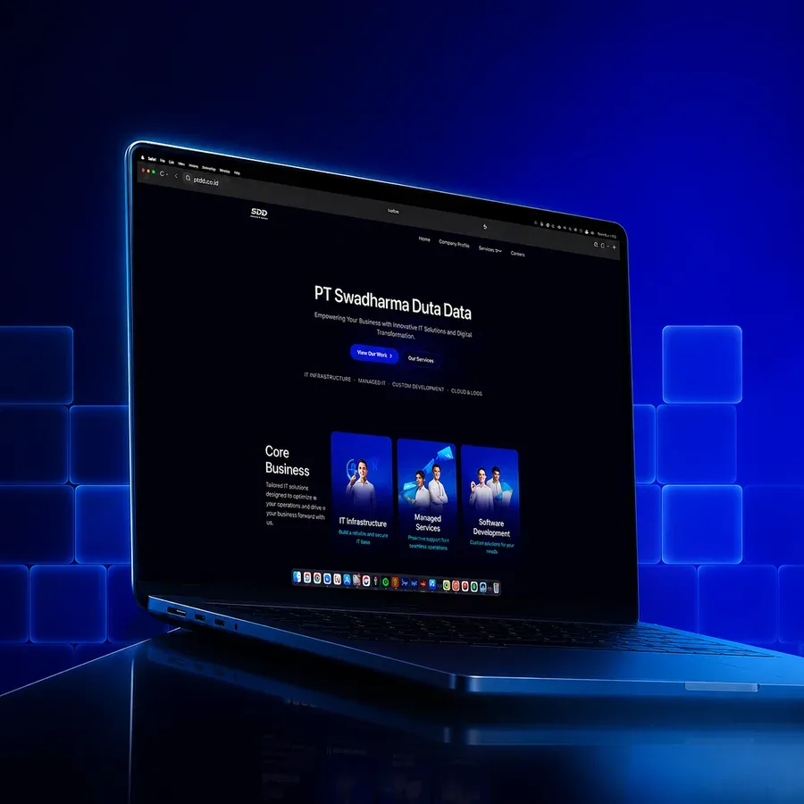
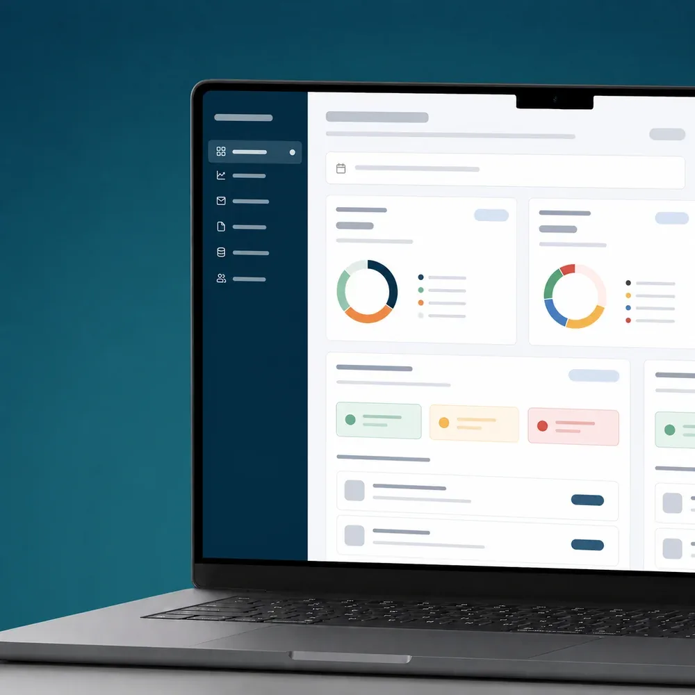
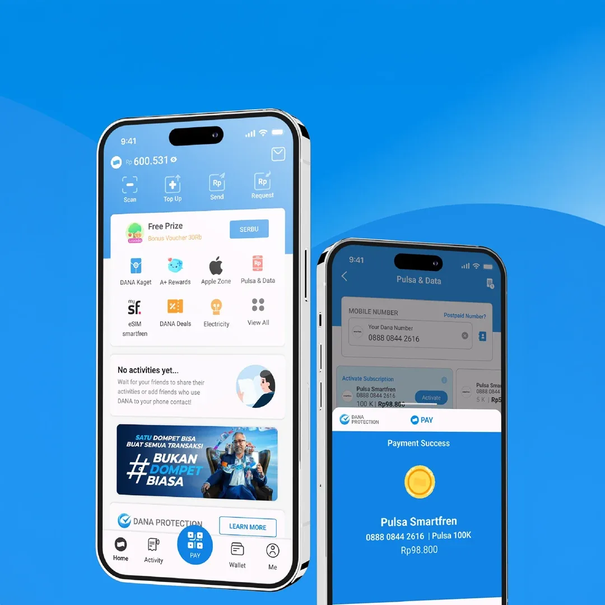
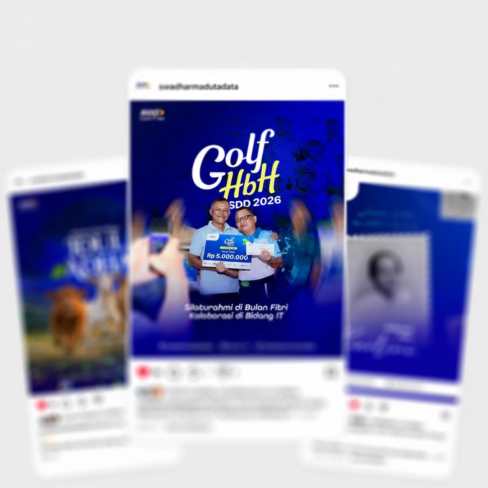

Design practice / 2026
Yogendra
Chaudhary
Product Designer
Flows → Interfaces → Products
Designing clear, usable product experiences.
A UI/UX and Product Designer focused on intuitive software interfaces, reusable components, and user-centered workflows—turning complex product requirements into clear, usable experiences that people can navigate with confidence.
Selected product design work across business software, university web experiences, and service platforms.

Party, purchase, accounting, profile, settings, sales, and quotation workflows in one structured platform.

87 screens and 81 component variants across desktop and mobile for the School of Management, Tribhuvan University.

Booking, commerce, livestream, guru verification, messaging, and profile experiences across web and mobile.

Turning multi-step product requirements into clear, status-aware workflows and safer actions.

Using usability testing, interface reviews, and feedback to identify friction and refine product experiences.

Reusable components, consistent interaction patterns, and structured UI foundations for scalable product work.
Communicating design intent clearly so implementation stays consistent with the intended experience.
I design intuitive software interfaces, reusable UI components, and user-centered workflows. My process combines interaction design, usability testing, and close developer collaboration to make complex products easier to understand and use.
Product design & developmentI design and refine software product interfaces with a focus on clarity, usability, and consistent interaction patterns while collaborating with developers to support accurate implementation.
Assisted with usability testing, interface reviews, and refinements based on feedback.Created reusable interface elements and collaborated with the product development team while supporting clear, usable software interfaces.
Accounting & Business Management Software
School of Management, Tribhuvan University
Hetauda, Makawanpur
Four languages listed in my CV alongside an ongoing Bachelor of Business Studies and hands-on UI/UX product work.